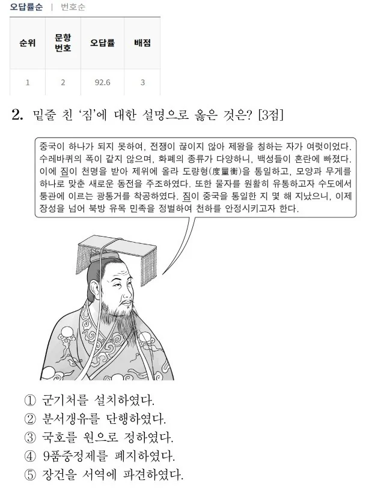
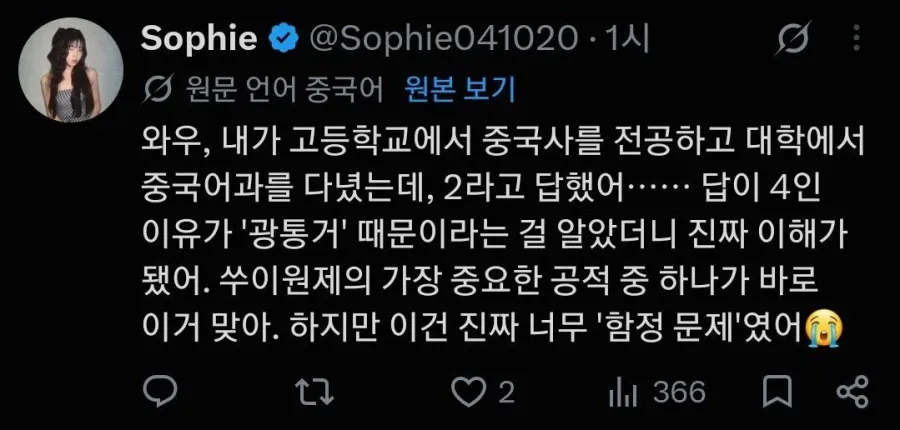
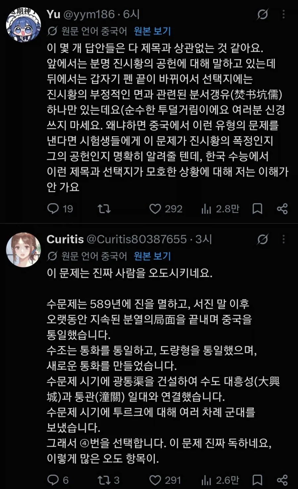
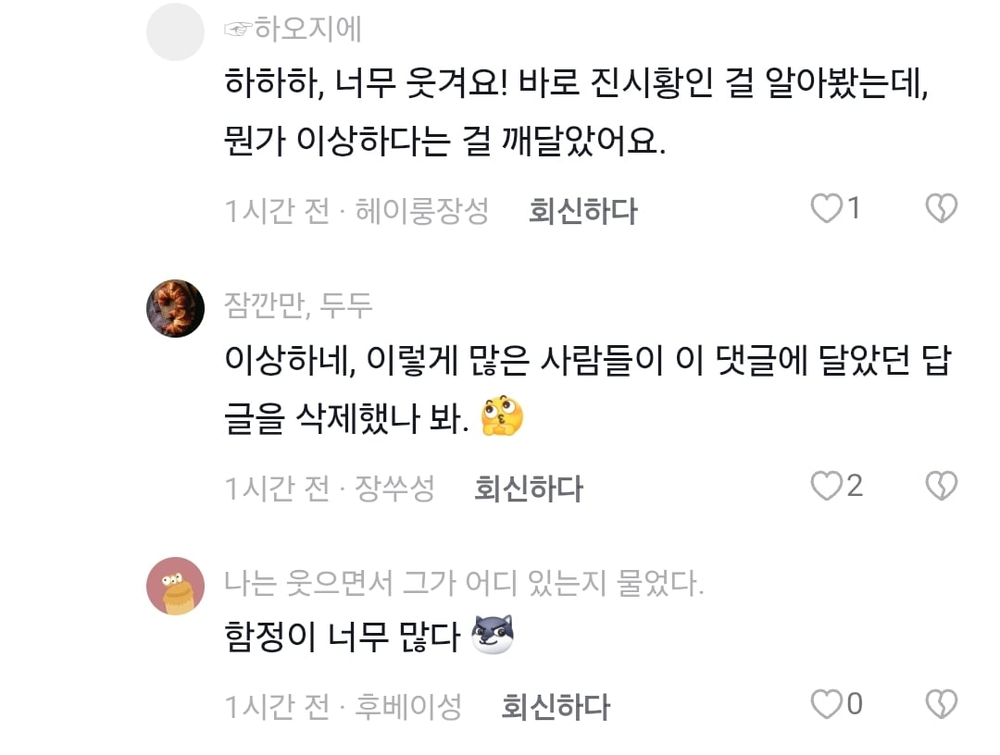
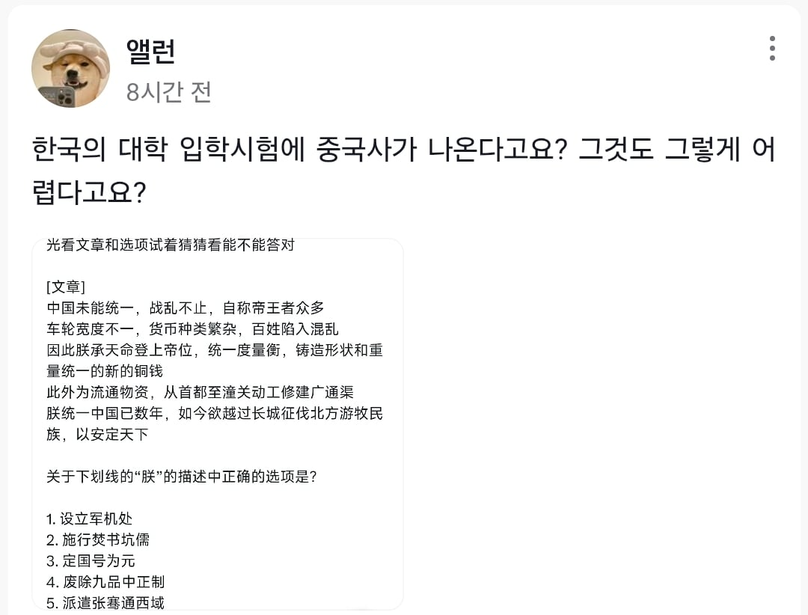

이번 수능 세계사에서 나왔던 중국사 문제
X와 더우인(중국 SNS) 등에 해당 문제가 번역돼 올라왔는데







문제가 번역되어 올라오자마자 반나절도 안돼 댓글이 수백에서 수천개가 달렸는데
대부분 진시황인줄 알고 2번 골랐다 4번인걸 알고 충격먹음 ㄷㄷㄷ
2번이라 우기던 중궈들에게 역덕후들이 4번인 이유를 설명하자 쪽팔려서 댓삭하고 튈정도
중국 수능(가오카오)에 출제해도 95%는 틀렸을거라는 얘기도 나오고 이걸 맞춘 8%의 한국학생들은 뭐냐고 진심으로 놀라는 중

진시황제 구글에 검색하면 복장도 똑같은 책 표지 나오는데. 삽화까지 함정이었냐